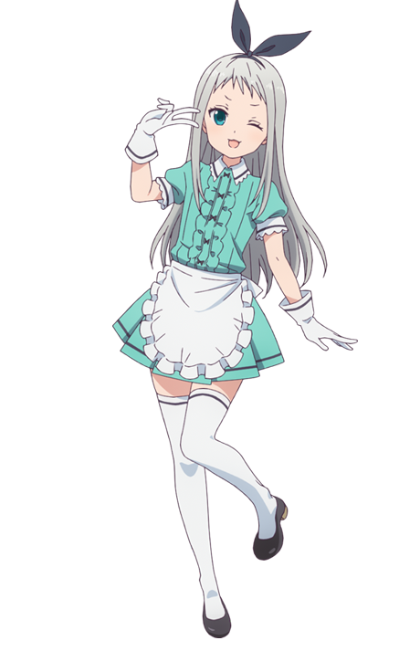

O que são Traps
A palavra Trap vem do inglês de armadilha, traps são nada mais nada menos do que personagens ou pessoas que tem aparência feminina, até que você chegue perto o suficiente para comprovar que na realidade é do gênero masculino
 - ExemploSe colocarmos um gato em uma caixa, nos não podemos saber se ele é bonito ou não até abrirmos a caixa, ou seja, ele é ao mesmo tempo bonito e feio, (na experiência real é usada uma pólvora instável- versão de Einstein, ou um frasco de veneno – versão de Schrödinger deixada juntamente ao gato que pode ou não causar a morte do mesmo, ou seja, o gato está ao mesmo tempo vivo e morto, pois não sabemos até abrirmos a caixa, porém para exemplificar melhor basta pensar em uma qualidade do gato, por exemplo, a beleza do gato).
Ou seja você não sabe se uma trap é realmente uma trap ou não até que você possa confirmar o seu gênero, usando a mesma teoria do gato, uma trap é gay e não é gay ao mesmo tempo.
A luz às vezes age como uma onda e às vezes age como uma partícula, a luz é dual, isto é: ora ela comporta-se como uma onda, ora como partícula, esse comportamento, chamado de “dualidade onda partícula”, também é observado em outras partículas quânticas, o meio que ela age muda independente da observação, como isso se liga a traps serem gays ou não?
da mesma forma que a luz muda independente da observação, uma trap pode ou não ter o orgão sexual masculino independente da observação.
O conceito de pH, ele é usado para definir um valor que representa a acidez ou base de um componente, normalmente é usado um indicador para descobrir tal valor por exemplo papel tornassol, esse valor é então colocado em uma escala que vai de básico ao acido, é possível deixar um componente mais acido ou mais básico dependendo do que é adicionando a ele, e como isso se aplica a traps serem gays?
A escala do pH pode ser usada também para medir a homossexualidade, levando em consideração o fato de uma trap ter o órgão genital masculino isso é gay, no caso estaria na extrema esquerda da escala, mas, trap normalmente tem uma aparência feminina e se adicionarmos as características femininas, e dependendo do caso a beleza, nesse caso essas características femininas servem de componentes para tornar as traps menos gays, ou seja elas estão mais ao meio da escala sendo então neutro.
Erwin Rudolf Josef Alexander Schrödinger foi um físico teórico austríaco, conhecido por suas contribuições à mecânica quântica, especialmente a equação de Schrödinger, pela qual recebeu o Nobel de Física em 1933
Um crossdresser, geralmente um personagem fictício em um anime, que se veste com roupas do gênero oposto para fazer as pessoas pensarem que são do gênero oposto. O termo vem do tropo de anime onde um personagem que se veste do sexo oposto para fazer as pessoas pensarem que são desse sexo.
Não deve ser confundido com transgenerismo, que é uma pessoa em transição para o sexo oposto. Nem com Femboys que são pessoas do sexo masculino com características femininas (não necessariamente usam roupas femininas)
Homossexualidade refere-se à característica, condição ou qualidade de um ser que sente atração física, estética e/ou emocional por outro ser do mesmo sexo ou gênero.